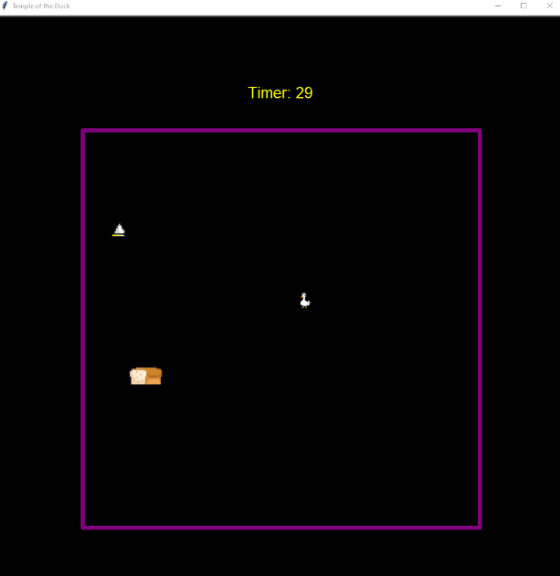
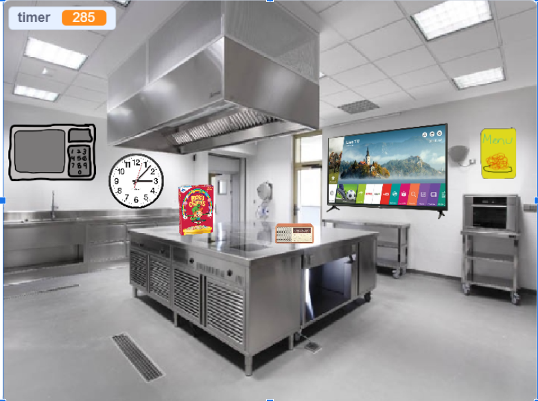
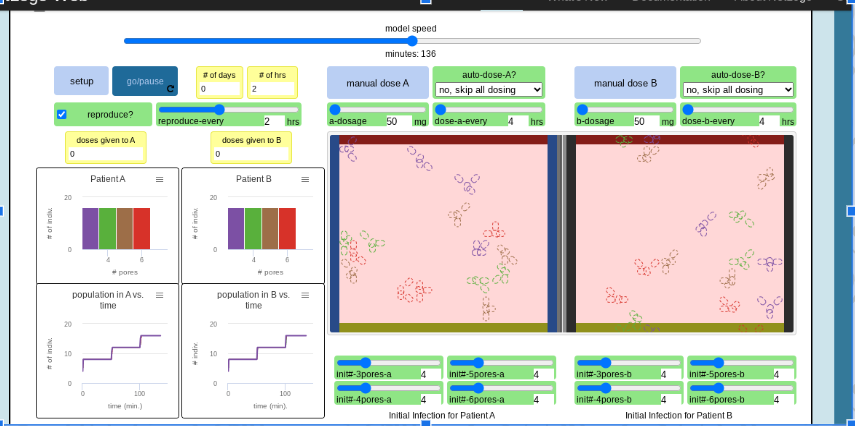

Home
Portfolio
About Me
This is my Portfolio Page!
Welcome to Build a Bunny!


This is a design game stimulator that allows users to make their own Bunny!
The computer would ask user what environment they would want their bunny to be located,
then ask users what color and size they would want their bunny. Then once users answer the
questions, they get to watch their personalized bunny get made! Then to top it all off they
are given a pet turtle that crawls around and on their bunny.
Here is the project code:


Temple of the Duck

We will have a map with randomly generated spikes and bread. A collision with a spike will end the game
and a collision with bread will earn you a point. There will be a 30 second timer to determine how many
pieces of bread you can grab in that time. Finally, there will be a leaderboard that will use list
indexing to determine if you made the leaderboard or not.
Second day scratch project.

Users start the game and a 5 minute timer starts to countdown. The user will click on different sprites in
the kitchen to solve clues and puzzles. They will do things such as figure out different codes to enter,
and listening and looking at clues. Once they reach the final puzzle they will be presented with a key
that as in the microwave and be able to escape the kitchen. If they do not escape the room within 5
minutes they will lose.
phishy fish tank
.png)
here were problems with the alkalinity monitor, the temperature monitor, and the magnesium monitor.
In the alkalinity monitor, the value 1 was greater than the value 2, so the range created did not work.
In the temperature monitor, the number of readings was set at 0, and when trying to find the average temperature
you needed to divide by the number of readings, so the correct average temperature was not obtained.
In the magnesium monitor, the levelmnumber was set at the length of the list and called upon, but since the list
indexing starts at 0 and not one, there was no item in the list called upon..
Bacterial infection

The Bacterial Infection model represents how bacteria in a population becomes more resistant, which is because
the more people are exposed to it the more immune everyone becomes over time. Bacterial infections are beneficial
to an environment in order to maintain a well immune system but when they get out of hand can be very dangerous.
Especially if there isn't a dosage of antibiotic to use to limit the bacteria from spreading into an infection.
Modified bits in pictures.

Use data files to create graphs.

Using netlogo do remix of illusions.